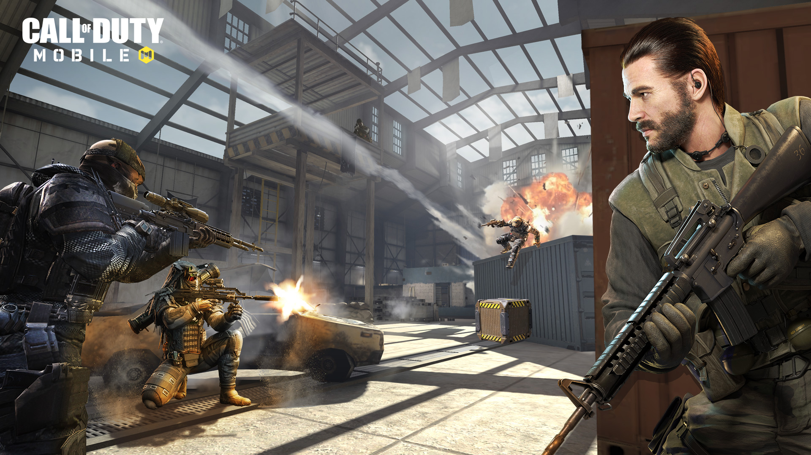

Call Of Duty Multiplayer Modes

-
Team Deathmatch
: A simple strategy game along with a group of
members of 8 to 10. The two team fight with
each other to get the kill cap but within a given time limit.
-
Free For All
: This mode is real Deathmatch along with
Activision’s
insight to hunting down any players.
There will be no team and win strategy is based on the highest kill.
However, the player who is having the highest number of kills, 20 is the maximum to wins the game.
-
Frontline
: Frontline Mode is one of the default game modes in
Call
of Duty : Mobile, available to be played
on Nuketown, Crossfire, Crash, Hijacked, Killhouse.
Each team would spawn at their own base then make their way to the battlefield to destroy the other
team.
The first team to reach 50 kills wins the match.
-
Hardpoint
: The teams must rush to secure a "hardpoint" on the map
and repel the area from the enemies.
Holding the hardpoint increases the teams' score, but if no players are in the hardpoint, no points are
gained. It is similar to Headquarters, but respawning is always enabled, even if the player's team is
holding the hardpoint. The Hardpoint switches to different set rotational positions on the map several
times
during the match. A point is granted every second a single team is present in the Hardpoint.
If players from both teams are present in the Hardpoint, it will be marked as "contested" and neither
team
will gain points until remaining enemies are removed from the objective. Players who arrive in a new
Hardpoint or one that was previously occupied by enemies gains 200 score for "Securing the Hardpoint"
-
Domination
: Domination, also known as Bro, Do u even cap? as an
April Fool's day joke, is a multiplayergame mode featured in Call of Duty: United Offensive,Call of Duty 2: Big Red One, Call of Duty 4:
Modern Warfare, Call of Duty: World at War, Call of Duty: Modern Warfare 2, Call of Duty: Black Ops, Call of
Duty:Modern Warfare 3, Call of Duty: Black Ops II, Call of Duty: Strike Team, Call of Duty: Ghosts, Call of
Duty:Advanced Warfare, Call of Duty Online, Call of Duty: Black Ops III, Call of Duty: Infinite Warfare, Call
of Duty: Modern Warfare Remastered, Call of Duty: WWII, Call of Duty: Black Ops 4, Call of Duty: Mobile,
Call of Duty: Modern Warfare and Call of Duty: Black Ops Cold War. The objective of Domination is to own all
of the control points on the map. There are usually at least three of these control points scattered around
the map, and are usually found in key strategic locations. To capture a control point, a player must stand
near it for 10 seconds with no enemies nearby to capture it for the player's team.
-
Search And Destroy
: At the beginning of a round one team is
assigned as the attacking team while the other
is assigned as the defending team. There is a bomb located close to where the attacking team spawns,
which
can only be carried by one player at a time. The bomb is dropped on the ground when the player carrying
it
is killed. The timer starts ticking as soon the round begins. The team that wins four rounds (seven
rounds
in Call of Duty and United Offensive, six in Call of Duty: Advanced Warfare) first win the game.
Call Of Duty Battle Royale Modes

-
Classic
: The Battle Royale mode is also featured in Call of Duty:
Mobile. The mode works in a similar way as Blackout. The first map, called Isolated, featuring various
places from the Modern Warfare and Black Ops series, in addition to new exclusive locations. Isolated
have different vehicles available around the map and supports up to 100 players.
With the release of Season 11 Anniversary update, on October 15, 2020, a second map called Alcatraz was
added. Unlike Isolated, Alcatraz only supports 40 players with no vehicles. The players are also able to
respawn up to five times.


-
Warfare
: Warefare is a 20vs20 battle royale gameplay this mode is
is like a deathmatch mode but with more players and bigger map.
You will only need to loot once for the entire game because you got the infinite respawn without losing
items or guns when you die.
You will witness all the intense battle which happen on the ground, grenade, smoke, class usage, and
more.
This gamemode is very intense to play especially after the 2 phase of safe zone which make you fight
against every enemy you see.